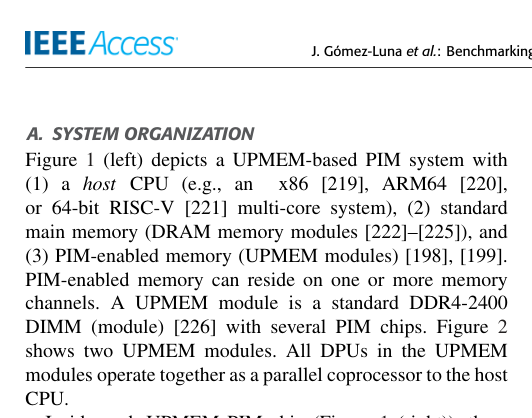
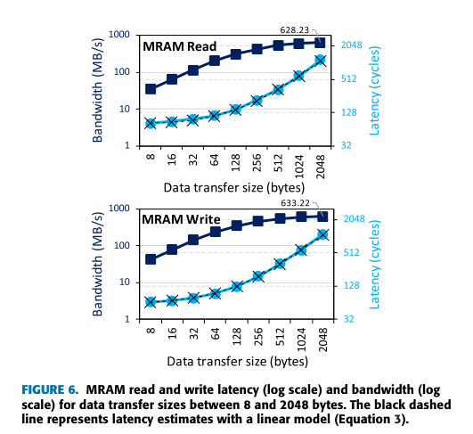
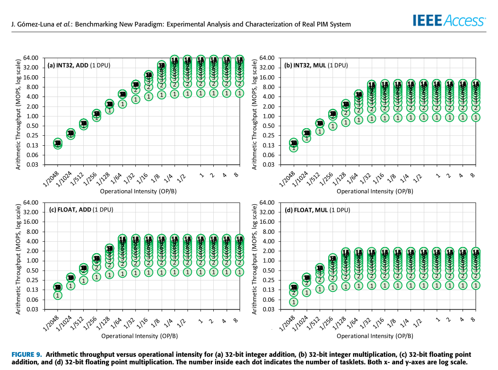
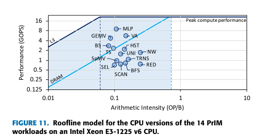
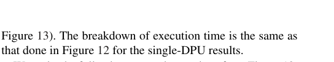
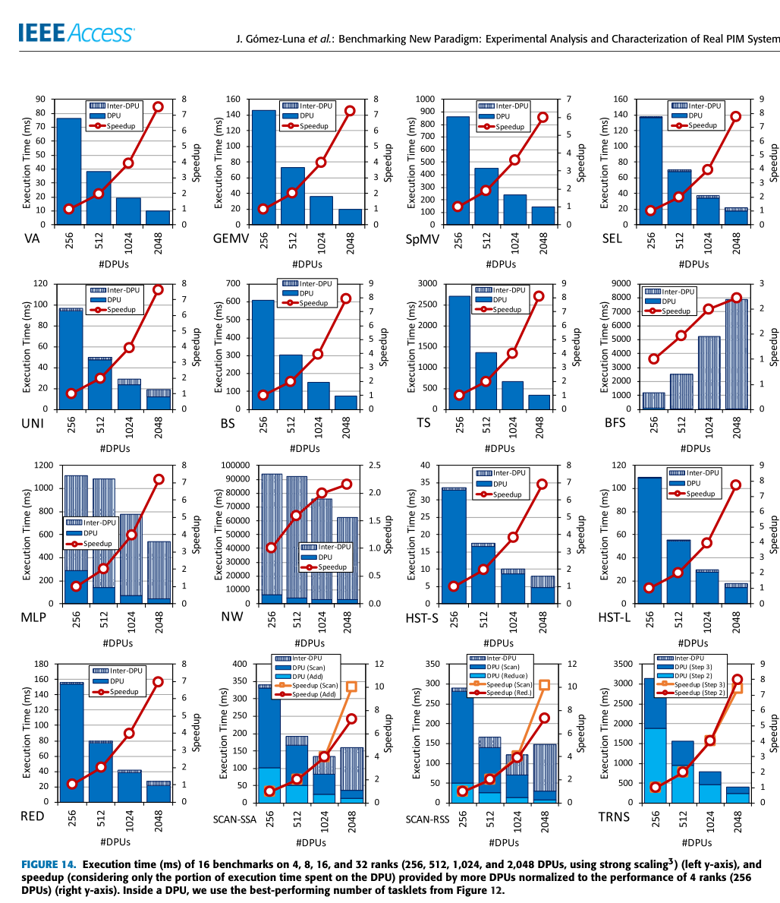
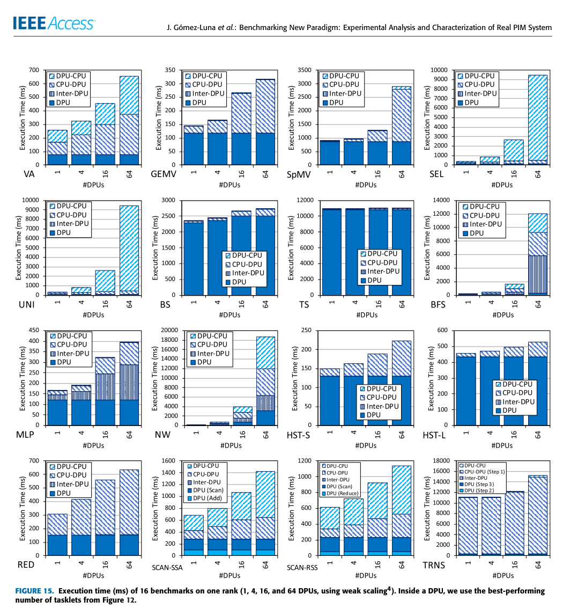
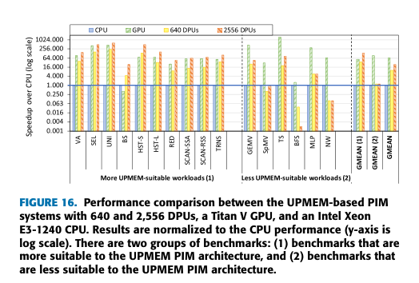
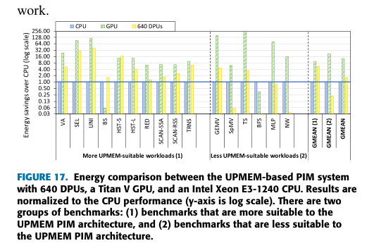

本报告由大模型自动生成，可能存在理解、归纳或数据转述错误；请以原论文为准。 Benchmarking a New Paradigm: Experimental Analysis and Characterization of a Real Processing-in-Memory SystemJuan Gómez-Luna, Izzat El Hajj, Ivan Fernandez, Christina Giannoula, Geraldo Francisco de Oliveira Junior, Onur Mutlu · IEEE Access · 2022 · 原文 · PDF 报告模型：gemini-3.1-pro-preview / high 这是一篇详细介绍《Benchmarking a New Paradigm: Experimental Analysis and Characterization of a Real Processing-in-Memory System》（评估新范式：真实存内计算系统的实验分析与特征化）的导读。该文章发表于 2022 年，首次对业界首款商用的真实存内计算（Processing-in-Memory, PIM）系统——UPMEM 系统进行了全面的实验分析、微基准测试，并开源了专门针对该架构的基准测试集 PrIM。 在正式讲解文章各章节之前，我们首先建立理解本文所需的最小系统全貌与背景知识。 系统全貌与背景补充： 在现代计算机中，处理器（Central Processing Unit, CPU / Graphics Processing Unit, GPU）与主存（Dynamic Random Access Memory, DRAM）是分离的。当执行数据密集型任务（如神经网络、图计算）时，系统需要将海量数据通过狭窄的内存总线从内存搬运到 CPU，这带来了巨大的时间延迟和能耗，被称为“数据移动瓶颈”（Data Movement Bottleneck）。为了解决这个问题，学术界长期研究“存内计算”（PIM），即在内存芯片内部或附近集成计算单元，让计算直接在数据所在的地方发生。 在本文的研究对象 UPMEM 系统中，系统架构由以下几个层级组成：
需要特别说明的是，关于体系结构与 EDA（Electronic Design Automation，电子设计自动化）的协同，本文属于对已流片真实硅片硬件的“黑盒/灰盒”基准测试与架构特征提取，原文并未讨论架构参数如何转化为 EDA 综合、布局布线的目标函数或代价模型，也没有涉及具体的时序、热力学分析反馈。文中唯一涉及到制造工艺约束的地方是：作者指出，由于传统 DRAM 制造工艺仅提供 3 层金属布线（远少于逻辑芯片的 10 层以上），为了控制硬件面积和成本，DPU 的微架构被强制简化，没有原生硬件乘法器和浮点运算单元，这直接影响了后续测试中的指令吞吐量表现。 以下是按论文原有结构的详细解析。 I. Introduction (引言)文章开篇指出了现代数据密集型工作负载面临的数据移动瓶颈问题。过去解决该问题的存内计算方案主要分为两类：一是利用存储单元自身模拟计算的 PUM（Processing-Using-Memory，基于内存的计算），往往只能做简单的位运算且需要彻底改变数据排布；二是将计算逻辑放在 3D 堆叠内存底层的 PNM（Processing-Near-Memory，近内存计算），成本高且受限于散热。这些方案大多停留在仿真阶段。 UPMEM 公司提出了另一种路线：在成熟的 2D DRAM 制造工艺基础上，直接在存储阵列旁边集成名为 DPU 的通用顺序执行处理器核。这是世界上第一个公开发布的商用真实 PIM 架构。为了帮助程序员和硬件架构师理解这种新范式的潜力与局限，作者提出了两项核心贡献：第一，开发了一套微基准测试（Microbenchmarks）来探究 DPU 的算力和内存带宽物理极限；第二，开发并开源了包含 16 个实际负载的存内计算基准测试套件 PrIM（Processing-In-Memory benchmarks），并在包含多达 2556 个 DPU 的真实系统上进行了严格的性能和能耗评估。 II. UPMEM PIM Architecture (UPMEM PIM 架构)本节详细介绍了 UPMEM 系统的软硬件组织方式，解释了前文提到的概念并补充了编程模型。 如图 1 所示，在一个 UPMEM 芯片内包含 8 个 DPU。每个 DPU 拥有三个独立的物理存储空间： 
在微架构上，DPU 是一个运行在几百兆赫兹（如测试系统中的 350 MHz 或 267 MHz）的 32 位精简指令集（RISC）核心。它采用了**细粒度多线程（Fine-grained multithreading）**技术。由于 DPU 拥有 14 级流水线，但为了隐藏 MRAM 的数据读取延迟和指令依赖，硬件设计强制规定：同一个硬件线程（在 UPMEM 编程模型中称为 Tasklet）的连续两条指令必须间隔 11 个时钟周期发射。这意味着，程序员必须在一个 DPU 上至少启动 11 个 Tasklets，才能把流水线填满。 在编程模型上，系统采用 SPMD（Single Program Multiple Data，单程序多数据）模式。所有的跨 DPU 通信都受到了硬件架构的严格约束：DPU 之间没有任何直接的物理通信通道。如果 DPU A 需要 DPU B 的数据，必须由 DPU B 把数据写回自己的 MRAM，宿主 CPU 读取到主存，宿主 CPU 再写入 DPU A 的 MRAM。这种架构约束深刻地决定了后续哪些算法适合该系统。基于这些特性，官方给出了几个软件设计选择建议：尽量让 DPU 运行长任务以减少与 CPU 的通信；将数据切分为独立块分配给不同 DPU；以及至少使用 11 个 Tasklets。 III. Performance Characterization of a UPMEM DPU (DPU 性能特征化)本节通过作者自己编写的微基准测试，探测单个 DPU 内部的极限性能。 A. 算力吞吐量与 WRAM 带宽 作者首先测试了不同数据类型和操作在 DPU 上的算力吞吐量，以 MOPS（Millions of OPerations per Second，每秒百万次操作）为单位。此处作者定义了吞吐量计算公式（对应原文 Equation 1）： 其中， 为 Operations Per Second（每秒操作数）， 是 DPU 的时钟频率（原文未说明公式中的具体单位，举例时使用 MHz）， 是微基准测试循环体内包含的指令数（原文未说明单位，通常为无量纲），表示执行一次有效算术操作所需要摊销的总指令周期。 实验结果显示，所有操作的吞吐量都在启动 11 个 Tasklets 时达到饱和，验证了前文的硬件设计约束。值得注意的是，32 位整数加法的吞吐量高达 58 MOPS，而 32 位整数乘法的吞吐量骤降至 10 MOPS 左右，浮点加法更是降至不到 5 MOPS。这是因为（正如前文提到的制造工艺限制）DPU 没有原生的乘法器和浮点算术逻辑单元（Arithmetic Logic Unit, ALU），这些复杂操作是由软件库中的多个移位和加法指令模拟完成的。 随后，作者利用 STREAM 基准测试评估 WRAM（便笺内存）的带宽，定义了理论极限带宽公式（对应原文 Equation 2）： 其中， 为 Bytes per second（字节/秒）， 是测试循环中读取和写入的总字节数（单位：字节 bytes）， 是 DPU 频率（原文未说明公式中的具体单位，举例时使用 MHz）， 是执行该操作所需的指令数（原文未说明单位，通常为无量纲）。测试表明，只要把流水线填满，WRAM 的访问带宽与内存访问模式（顺序、步长或随机）完全无关，因为所有的 WRAM 加载/存储指令在满载流水线中都只需要 1 个周期。 B. MRAM 带宽与延迟 数据在 MRAM（大容量 DRAM）和 WRAM（计算区）之间移动必须通过 DMA。作者通过公式对 MRAM 单次 DMA 传输的延迟（周期数）进行了线性建模（对应原文 Equation 3）： 其中， 表示 DMA 传输的固定开销（单位：周期 cycles），测量得出读操作约为 77 周期； 表示传输每个字节的可变开销（单位：周期/字节 cycles/B），测量得出约为 0.5 周期/字节； 是传输的数据块大小（单位：字节 bytes）。 由此推导出 MRAM 实际可用带宽的公式（对应原文 Equation 4）： 其中， 为 Bytes per second（字节/秒）， 是传输的数据块大小（单位：字节 bytes）， 是 DPU 频率（原文未说明公式中的具体单位，举例时使用 MHz）， 是 MRAM 访问延迟（单位：周期 cycles）， 和 同上。 图 6 的实验结果验证了这一模型：当传输的数据块很小（如 8 字节）时，固定开销 占主导，带宽极低；当传输块增大到 1024 或 2048 字节时，固定开销被摊销，带宽趋于饱和上限（约 633 MB/s）。因此作者得出编程结论：在 WRAM 空间允许的前提下，应尽量使用大的 DMA 块传输来掩盖延迟。  C. 算力吞吐量与运算强度（Roofline 模型分析） 为了界定 DPU 的本质属性，作者引入了“运算强度”（Operational Intensity）概念，定义为每从 MRAM 访问一个字节的数据所执行的算术操作数（单位：OP/B，Operations per Byte）。图 9 展示了吞吐量随运算强度的变化：当运算强度极低（例如 0.25 OP/B，即每访问一个 32 位整数只做 1 次加法）时，吞吐量就已经达到了天花板。这证明了 DPU 很容易被计算指令占满，它在本质上是一个**受限于计算能力（Compute-bound）**的处理器，非常适合用来处理数据复用率极低的内存受限型负载。  IV. PrIM Benchmarks (PrIM 基准测试集)在了解了底层限制后，作者选择了 16 个在传统 CPU 上属于“内存受限”的实际应用负载，开源为 PrIM 基准测试集。这些负载涵盖了线性代数、数据库、数据分析、图计算、神经网络和生物信息学等领域。 图 11 利用 CPU 的 Roofline 模型展示了这 16 个负载的特征，它们全部落在斜线（内存带宽受限区域）下方，证明它们理论上都适合放入 PIM 中加速。 在具体实现上，由于 DPU 之间无法通信，软件设计面临不同的挑战： 
V. Evaluation of PrIM Benchmarks (PrIM 基准测试评估)本节在真实的 UPMEM 系统（包括较新的 2556 核系统和较旧的 640 核系统）上对上述 16 个负载进行了大规模测试，并与高端 CPU（Intel Xeon E3）和高端 GPU（NVIDIA Titan V）进行了对比。 A. 扩展性测试（Scaling Results） 作者测试了强扩展性（Strong scaling，固定总任务量，增加 DPU 数量）和弱扩展性（Weak scaling，固定每个 DPU 的任务量，增加 DPU 数量）。图 13、图 14 和图 15 的实验证明了前文的理论推断： 对于没有或仅有极少 inter-DPU（DPU间）同步的负载（如 VA, GEMV），系统展现出了完美的线性扩展性；投入多少 DPU，性能就提升多少。但对于 BFS 和 NW，随着 DPU 数量增加，Host CPU 协调各 DPU 的通信时间（图中标识为 "Inter-DPU" 部分）呈线性甚至指数级上升，最终吞噬了并发计算带来的收益。这指出了当前 UPMEM 架构最致命的缺陷：由于缺乏直接的 PIM 到 PIM 网络，强依赖全局同步的算法在这里扩展性极差。    B. 与 CPU 和 GPU 的比较 图 16 和图 17 给出了性能和能效的终极对比：  
VI. Key Takeaways (核心启示)本节将前文分散的实验现象总结为四条供未来架构演进和软件开发的启示：
总结主线这篇文章的主线非常清晰：最初面临的核心问题是冯·诺依曼架构下 CPU 与内存之间数据搬运的极高代价。为了解决这个问题，产业界造出了真正把 CPU 核嵌入普通 DRAM 里的 UPMEM 芯片。作者拿到这套前所未有的系统后，首先自底向上，用微指令测试摸清了单个 DPU 的物理底线（加法快、乘法慢、必须用 DMA 搬移大数据块掩盖延迟、算力极易饱和）；随后，作者选取了一批真实业务负载适配这套硬件特征并重写代码；最后，通过宏观的系统级扩展性测试，暴露出该系统缺乏核间直接通信网络这一阿喀琉斯之踵，并客观地划定了当前真实存内计算系统能够战胜顶级 CPU 和 GPU 的能力边界（即低通信、少复杂计算的流式数据任务）。 需要注意的是，文章的结论不能被过度推广。该评测基于极度依赖 CPU 协调的初代 UPMEM 架构，并未覆盖具有强大内部路由（如 3D 堆叠 HBM 内置逻辑）的其他 PIM 形态。此外，GPU 和 CPU 拥有成熟的工具链和硬件迭代，而 UPMEM 硬件仍有主频提升和工艺微缩的空间，因此这种跨代架构的绝对数值对比更多是为了验证“消除数据移动瓶颈”这一范式本身的生命力。 |